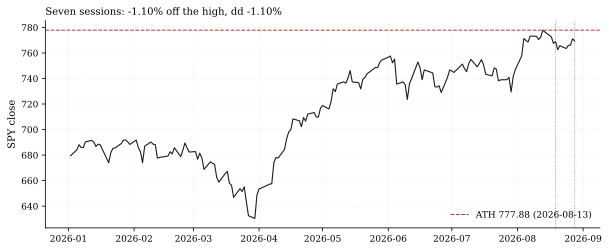
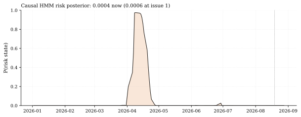
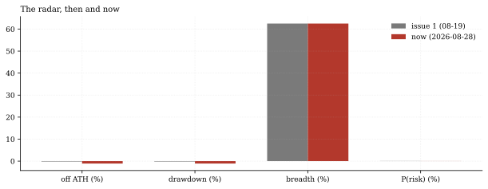

The one-paragraph version. Regime Radar issue 1 (August 19) read a market 0.20% off its record with a risk posterior of 0.0006. Seven sessions later the tape has done its first real work of the cycle: SPY is 1.10% below the August 13 high, the paper-live library book just took its first drawdown, and year-to-date gains have trimmed from +14.2% to +13.2%. The radar's verdict on all that: nothing. The causal HMM - refit on the same expanding, no-look-ahead pipeline as issue 1 - puts the probability of the risk state at 0.0004, lower than at issue 1, and remains in the bull state (historical risk-state characterization: +3.4% annualized return at 30.2% vol for state 0 versus +17.4% at 12.0% for state 1). Breadth is unchanged at 62.5% of the 16-ETF universe above its 200-day mean. A one-percent drawdown, this model says, is not a regime event - it is noise the bull state absorbs.
How we worked this problem
This issue re-runs issue 1's construction unchanged on the panel through August 28: the same panel gauges (distance from the high, drawdown, 200-day breadth), the same causal two-state HMM on SPY features (expanding window, quarterly refits, 756-day minimum training sample, fixed seed - the refit takes minutes of wall time, varying run to run; the artifact records each run's measure), and the same FRED operand block. Issue-1 baselines are quoted from that note's published numbers.json (panel cut August 14), so every then-versus-now comparison is artifact-to-artifact, not memory-to-memory. One construction caveat carried from issue 1 and disclosed again: the FRED cache carries real VIX prints only through August 13, and the operand block's bounded fill extends them to August 20 - so the VRP-style reading below mixes a carried August-20 implied print with an August-28 realized-vol estimate. It is the radar's gauge, not the Vol Desk's grader-parity series (which read 1.47 on August 20).
The data audit
| Source | Coverage | As-of | Role |
|---|---|---|---|
data/cache_panel_2007_2026.parquet | 16 ETFs, daily OHLCV | 2026-08-28 | gauges, breadth, HMM features |
data/rates/rates.parquet | FRED rates/VIX cache | 2026-08-13 (real prints; operand fill to 08-20) | VIX gauge (staleness disclosed) |
articles/2026-08-19-regime-radar/assets/numbers.json | issue-1 baselines | published 2026-08-19 | then-versus-now comparisons |
| Vol Desk + Live Desk published artifacts | cross-note figures | 2026-08-26 / 2026-08-28 | the 1.47 VRP reading; the live book's first drawdown |
The funding cache (as-of 2026-07-31) is not used.
The external read
The outside tape matches the radar's calm-at-the-index reading: Penn Mutual Asset Management's August 20 chart-of-the-week is titled "The S&P 500 Index Is Calm. Its Stocks Aren't." - quiet index vol with choppy constituents underneath (Penn Mutual AM), and the pullback genre generally describes a modest dip from records finding support (Investing.com). Our cross-check: house 20-day realized SPY vol stands at 10.45%, the 31st percentile of the panel's history - index-level calm, exactly the regime the external piece describes; the choppiness it flags lives in single-stock dispersion, which a 16-ETF panel smooths by construction.
Exhibits
Exhibit 1 - the seven sessions. SPY's 2026 path against the August 13 record: the trim to 1.10% off the high - the same stretch in which the paper-live library book took its first drawdown (-1.03% across its six ledger rows; Live Desk, Aug 28)
- and the two issue dates marked.

Exhibit 2 - the posterior that didn't flinch. The causal risk posterior across 2026 - pinned near zero all year, and unchanged through the pullback: 0.0004 now versus 0.0006 at issue 1.

Exhibit 3 - then and now. The four gauges side by side: off-ATH (0.20% then, 1.10% now), drawdown (same pair), breadth (62.5% both cuts), and the risk posterior (0.06% then, 0.04% now). Only the price gauges moved; the regime gauges did not.

So what - opportunities
- The radar did its job: it did not overreact. A model that flips
- No deterioration beneath the flat headline: the below-200d list
- The gauge-vs-regime distinction is allocatable: price gauges
regime states on a 1% drawdown would be useless as a deployment gate; the posterior's stability through the first live stress is the behavior the design promised.
is the identical six names on both cuts (the bond complex, utilities, and gold) - gold sitting below its 200-day mean while equities hold near records is itself the defensive-rotation marker to watch, but nothing NEW went below in these seven sessions.
(off-ATH, drawdown) move daily; the regime posterior moves on persistent evidence. Deployment policy should key on the latter.
So what - risks
- Calm is conditional: the posterior characterizes state 1 at
- The VRP-style gauge is date-mixed: 14.63 implied (an August-13 print carried to 08-20)
- Seven sessions is one week and a half: the comparison window is
+17.4% annualized return and 12.0% vol on history - but the risk state's 30.2% vol arrives fast when it arrives, and two-state models are slow by design (the model missed nothing here, but it will also be late at true turns).
against 10.45 realized (August 28) reads 4.18 points - the radar's construction, not a same-day spread; fresh FRED data lands when the cache trigger arms (~September 13).
short by construction; the next issue re-reads after month-end.
Machinery: how this piece was produced
articles/2026-08-29-regime-radar-002/analysis.py mirrors issue 1's construction (panel gauges; _features_from_returns + HMMRegimeModel with the expanding quarterly refit; FRED operand block) and re-emits issue-1 baselines from that note's published artifact. Every number above lands in assets/numbers.json; three figures render as SVG + PNG twins.
Reproduce with: ``bash .venv/Scripts/python articles/2026-08-29-regime-radar-002/analysis.py ``
Limitations
- Two-state HMM on SPY (return + 21-day realized-vol features): the
- The posterior is one seed's converged path (fixed seed 42, 20
- The operand block's implied-vol date (August 20) lags the panel cut
- Issue-1 baselines are the published artifact's values on the August
states split largely on volatility; a growth-shock regime without vol would be missed.
iterations); refit noise across seeds is not quantified here.
(August 28) - a construction carried from issue 1, disclosed above.
14 panel cut - the panel has since been revalidated (revision episode, resolved August 23), so tiny base-period differences are possible.
Sources - external reading list
| Claim | Source |
|---|---|
| "The S&P 500 Index Is Calm. Its Stocks Aren't" - quiet index vol, choppy constituents | Penn Mutual AM, Aug 20 2026 |
| Bull-market pullback finding support (the dip genre's shape) | Investing.com |
quantlab-hmm-regime; macro-operands; matplotlib